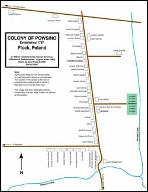

Below you will find a variety of research tips, clues, and other resources specific to this parish. These will differ from parish to parish depending on what kind of material is submitted by our members. Some images if applicable will be enlarged if you click on them.
|  | Map of the Colony of Powsino, c.1930. This village has been obliterated by the construction of a huge oil refinery at the site. Click on map to bring up printable size in pdf version. - courtesy of Helen Alexy |